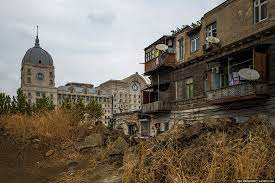

Нахичевань
Nakhichevan is the capital of the Nakhichevan Autonomous Republic and, concurrently, one of the oldest cities in Transcaucasia, which is more than 3000 years old! The Nakhichevan Autonomous Republic, abbreviated NAR, is separated from the main part of Azerbaijan and does not have common borders with it, but is considered an independent region within it. Tourists rarely come here, but there is definitely something to see here. The city, which, according to legend, was founded by Noah, is ready to reveal its secrets and mysteries to curious travelers. Nakhichevan. The city was founded around 1500 BC, but the history of the area goes back even further. This is evidenced by numerous historical monuments and finds obtained during archaeological excavations. In the XI - VI centuries BC. Nakhchivan was part of the ancient state of Media. It was a well-equipped city, which had everything necessary for the development of crafts, trade and farming. In subsequent centuries, Nakhichevan was repeatedly captured and attacked and at different times was under the influence of various empires and peoples. The Sassanids, the Arab Caliphate, the dynasties of the Shirvanshahs, Sheki Khans, Seljuk Turks, Mongols and Persians established their power on its territory. In the Middle Ages, well-developed and prosperous Nakhichevan was one of the largest Transcaucasian cities on the Great Silk Road. At the end of the 18th - beginning of the 19th centuries, Nakhichevan became the capital of the Nakhichevan Khanate, an independent entity within the Persian kingdom. However, already in 1827, the city was occupied by Russian troops led by General Paskevich without a fight. In 1828, the Turkmanchay Peace Treaty was signed, according to which Nakhichevan and the entire Nakhichevan Khanate came under the control of the Russian Empire. It was at this time that the city became part of the Armenian region, and a little later - the Erivan province. In 1921, a referendum was held, which showed that the majority of residents expressed a desire to join Azerbaijan as an autonomous republic. Sights of Nakhchivan The main asset of Nakhichevan is its mausoleums, the most famous of which, undoubtedly, is the so-called Mausoleum of Noah, or mausoleum-turbe. According to legend, Noah himself is buried here, whose ship landed on land near the future city during the Great Flood. The founding of Nakhichevan, according to popular belief, is also the merit of Noah. Descriptions from travelers of past centuries indicate that there was previously a tomb here, located in an old chapel. The mausoleum in its modern form was erected in 2006. This is a stately structure with a cone-shaped dome, richly decorated with ornaments of multi-colored mosaics. Noah's tomb is located at the bottom of the structure; you need to go down the steps to get to it. Inside the room there is a pillar, under which the ashes of the legendary biblical hero are believed to rest. Another interesting mausoleum in Nakhichevan is the tomb of Yusif ibn Quseir, built in the early Middle Ages, in 1161-1612. The structure has an elongated 8-sided shape. Its walls are decorated with patterns made using the technique of stone carving. Above the entrance to the mausoleum there is a sign with an inscription-quote from the Koran. The third famous mausoleum in Nakhichevan is the Momine Khatun Mausoleum. Momine Khatun is considered the woman who changed the history of Azerbaijan in the 12th century. She was the mother of one of the important rulers of that time - Jahan Shah. All three mausoleums are located close to each other: next to the Old Fortress (Kohnya-Galy), in the southern part of Nakhichevan. Health tourism in Nakhichevan In addition to unique historical sites, the city of Nakhchivan is known for its mineral waters and salt caves. Here is the Duzdag health resort, famous for its unique underground salt cave, located at a depth of 300 meters! People with respiratory problems come to the sanatorium. It is believed that staying among natural salts can improve health and cure a person from serious illnesses.